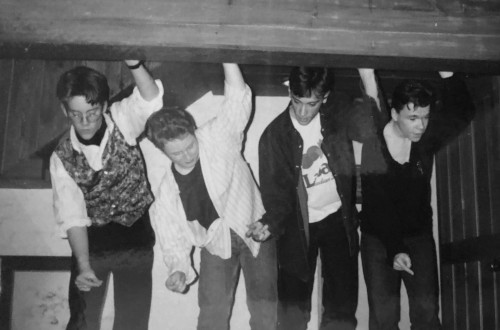
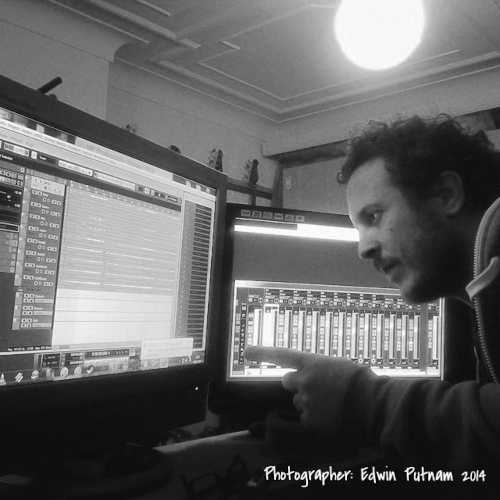
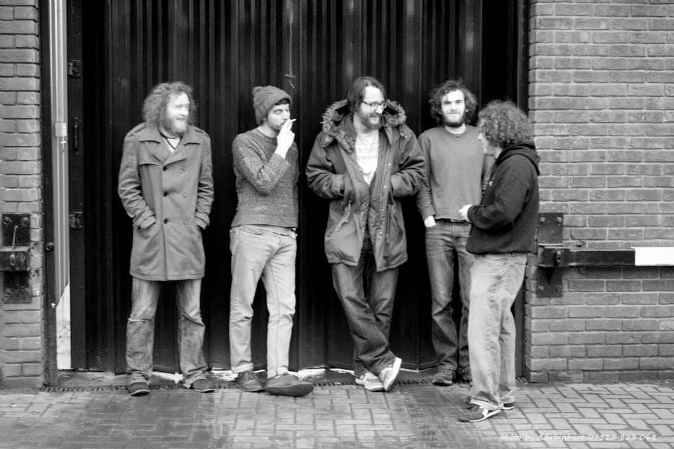
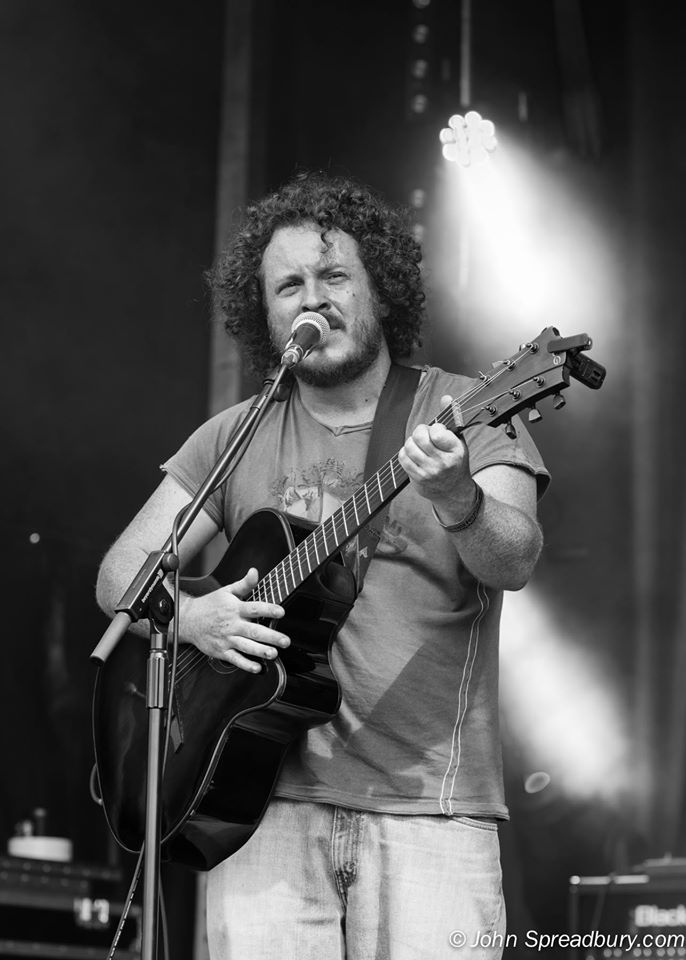
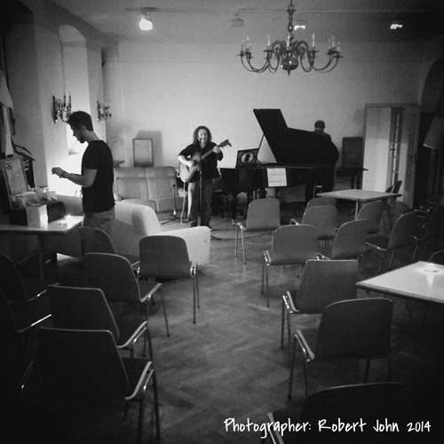

Wow! If you are here, you are either really interested in my work or you have a slight problem with compulsive reading
(don't worry, aparently about 20% of the populus shares your issue). The following is a breif history of everything I
ever did (well, the publishable bits). In some cases there may even be some shiny photos for those non-compulsive readers
amongst you.
This is a story is a story of career transition from musician/music teacher to junior software developer in less than a
year (Coda 2 Coder if you like).
First of all a little about me (naturally)...
From a very young age I remember hearing the same thing said about me: "That boy should be on stage", an opinion which
mirrored my desires, it was set in stone from about the age of 5.
Fast forward 13 years and I was headed to university for a performance degree, the years in between littered with countless
stage performances, several school bands and one offer of a record contract (which never materialised).

School band 1993 first and only record contract offer
After university I became interested in
music production and started learning the dark arts. As with many aspiring artists,
I had a variety of careers or day jobs to support my art projects...

Music Production 2014 Dogface Records HQ
I began as a
desk top publisher, but that job soon morphed into an administrators position, which I found uninspiring.
I moved into sales for a few years, which was marginally more interesting, but the stress was too much for me. Time for
my first total switch...
I walked around my local area in a suit with a CV and ended up building rooves in a window factory. The job required
someone with
maths skill, was interesting and was quite well paid for factory work. After a few years of fabricating rooves,
I moved into fitting them, which was better pay but brutal on the body. While fitting rooves I got the opportunity to retrain
as a
painter and decorator, so I did that for a while as it was easier on the body. Work was hard to come by in the north though
and commuting down south took its toll. Time for switch #2...

Founding members of Dogface Records 2014
I moved into a cheap flat in Manchester and got a job working in a bar, hoping to meet other musicians and play in more bands.
Whilst working as serving staff I ended up getting some kitchen experience which lead to me working as a chef for several years.
These jobs served their purpose, as I made many
music contacts in Manchester, but I couldn't stand the heat (angry chef), so I
had to get out of the kitchen. Time for switch #3...

Phoenix Festival 2015
Having made plenty of music contacts and beginning to get paid work as an artist gave me the confidence to become a full time
musician, during which time I
toured Europe 4 times. It was a great time and to an extent, we actually lived the dream. I was
however becoming thin thanks to lack of finances! At this point some of my music colleagues suggested becoming a music tutor.
I taught privately for a few years and then began doing
music workshops, which lead to me teaching in both primary and high
school. Fast forward a few more years and I had a
successful music tutor company, providing outsourced music lessons to primary
schools and was settled (ish); I wasn't exactly happy in the job, but at least it was secure. Then COVID decimated my business.
Time for switch #4...

Heidelberg, Germany 2014 European tour for album launch
That's where we stand as I write this introduction. Starting another career again, but this time with many more responsibilities
(children etc). At least I have some finances available to retrain, unlike countless others. Why coding you may ask; well to be
honest it
ind of runs in the blood: My father has been a developer since the late 60s. I definitely have no real experience in
developing, but I have been using a PC since my dad brought a BBC home in the mid 80s. I later experimented with early Apple Macs,
which largely meant just clicking on everything and seeing what it did, and was using Windows PCs from an early version (can't
remember which). I have
built a few PCs and would describe myself as having a good understanding of PCs and computer applications,
but consider myself to be a well educated beginner in coding at best. As well as the genetic reasons for training as a developer,
there are also obviously a number of practical reasons in the post COVID world. I want a career which is more secure in this new
and changing world and I need to be able to work from home if necessary.